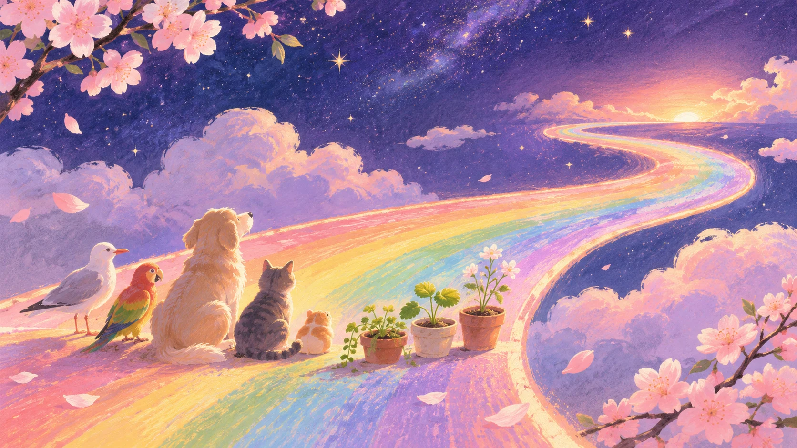

Dearest Tiao,
The card that comes with the cake doesn’t have enough room for everything I want to say, so I’m writing this separately. I choose to write to you in English because I believe that when I think in English, I’m gentler, more real, and less affected by my social mask, which allows me to speak to you from the bottom of my heart.
Having been with you for so long, I’ve understood too well how much you’ve suffered through your late twenties. You’ve done such a great job trying to live the best of yourself. You always ask me what I love about you. I think part of the answer is that you’re always trying to thrive. Surely, you'd complain, despair, and cry. But time after time, you find beauty in daily life and carry on. Pets, plants, and the piano have all become symbols of your tenacity in my eyes. Plus, you’re so cute and lovely when you focus on these things.
Alongside all the efforts we’re making, I want this letter to give you some strength emotionally. We’ve suffered enough, and it can’t get any worse. Even if it does get a little worse, I don’t think it can destroy us any further. So from here, the only way is up. You’re going to have a fabulous, amazing, happy, blooming life from now on. When I think about you, I think of the map "Rainbow Road" in Mario Kart, and somehow I believe you’re meant to drive the kart of your life along a road as incredible as that.

A spaceship-like shelter for all your pets and plants, you’ll have it. Money, you’ll have it. Confidence, you’ll have it. Happiness, you’ll have it. Eventually, you’ll get everything you want, and you’re going to be so boring.
I don’t want this to be about birthday. I want it to mark the beginning of taking your happiness back and taking in charge of the base color of your life. We can grieve, mourn, and cry. But then, we live and we thrive.
Wishing you ALL the BEST,
Shi